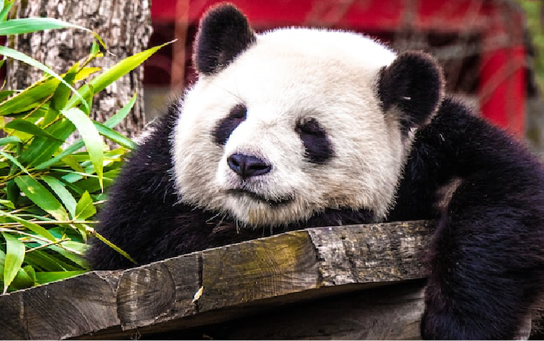

日本でいちばん動物とふれあえる場所
動物園で、ありのままの動物たちの生活や行動、しぐさの中に「凄さ、美しさ、尊さ」を見つけ、「たくさんの命あふれる空間の居心地の良さ」を感じてほしい。家畜・ペット種との触れ合いを通じて「命の温もり、命の尊さ」を感じてほしい。そして、野生動物の保護や環境問題を考えるとき、動物たちは私たちと対等な生き物なんだと思うきっかけになれる、そのような動物園でありたいと思っています。
動物園で、ありのままの動物たちの生活や行動、しぐさの中に「凄さ、美しさ、尊さ」を見つけ、「たくさんの命あふれる空間の居心地の良さ」を感じてほしい。家畜・ペット種との触れ合いを通じて「命の温もり、命の尊さ」を感じてほしい。そして、野生動物の保護や環境問題を考えるとき、動物たちは私たちと対等な生き物なんだと思うきっかけになれる、そのような動物園でありたいと思っています。